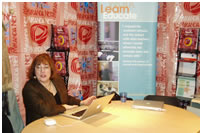
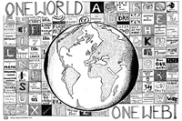
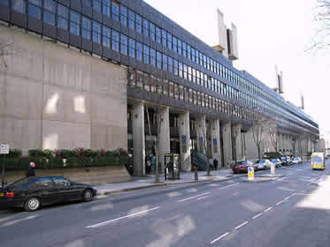
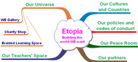
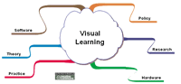

Archive 1 | Archive 2 | Archive 3 | Archive 4 | New Visitors
News Items January 2011 - December 2009
- MirandaNet at BETT11, 12th – 15th January 2011
- MirandaMod: September 2010
- MirandaMod at the WLE Centre, Institute of Education
- New Etopian Space on World Ecitizens
- New MirandaNet Visual Learning Site
MirandaNet at BETT11, 12th – 15th January 2011
Professional knowledge building resources from three years of MirandaMods can be found on the MirandaMods section of our website. The newest resources from the BETT11 week in London from 12th -15th January, listed below, also provide a taster of what to expect from the Education Show (March MirandaMods) as they are all about themes from Achievement for All. EMAP and Cisco may want to discuss how and where these materials are mounted.
At Olympia, London the MirandaNet team ran four MirandaMods on Achievement for All themes: three on the stand and one in a seminar room. The quality of the resources captured in the room was better than on the stand because the glass and metal roof of Olympia were not acoustically sympathetic.
The events had been marketed by MirandaNet for about two months before BETT11. Before and during the events information issues from the debates were tweeted and re-tweeted to about 500 educators. Some responded on the Twitter stream and others joined the Flash meeting and commented there. Members from Australia, Greece and Gambia who could not obtain the funding to come to BETT11 attended all the debates as a form of Continuing Professional Development. There will be more in the next newsletter about these contributions.
The MirandaNet team now have significant experience in leveraging these social media streams to great effect as the MirandaNet community become more sophisticated in their capacity to share professional knowledge stimulated by expert speakers and participant educators. The potential for outreach is for the AFA community is significant as they learn to use the technology comfortably.
Leading on the MirandaNet/Achievement for All web pages will be the talks from the three expert speakers to set the theme: Professor Sonia Blandford on Achievement for all; Dr. Chris Yapp on the implications for future learning and Professor Marilyn Leask on the value of communities of practice in professional learning. Also on the website will be the videostream and FlashMeeting record of the four events, including the transcript. The collaborative maps are being further developed by members in a MirandaLink debate during the next two weeks.
The MirandaNet team comment that the quality is good, given this is an ‘outside broadcast’ but obviously event better results have been achieved in the studio at the WLE centre, Institute of Education, University of London funded by HEFCE and Becta. However, this a small, agile and committed group that can set up a broadcast unit and produce results much faster than a media company and with more authentic results, because we are all committed educators. From this set of MirandaMods at BETT11 we discovered a number of things that will improve our “outside broadcast technique’ for the Education Show and make our costings for this proposal more accurate. The equipment at MirandaNet’s disposal and the limited bandwidth from the stand were challenging. More members need to be trained to co-ordinate all the digital streams. Sorting these issues out before the Education Show is vital because with so many more people attending the quality must not be compromised.
These are the opening resources:
- Professor Blandford's Speech with a transcript of her speech on Scribd
- Chris Yapp's Speech
- Marilyn Leask's Speech
 MirandaMod: September 2010
{kind=link}
MirandaMod at the Pan-Hellenic Conference on ICT in Education
A very successful MirandaMod was held at this conference in Greece.
Christina Preston, Leon Cych and Theo Kuechel ran the session from the 7th Pan-Hellenic Conference on Information and Communication Technologies in Education. People from across the world joined in through the Flashmeeting and were able to view the video stream that Leon broadcast through ustream.tv.
Socrates said writing would destroy human thinking processes: are the Internet and Web 2.0 having a more profound effect on cognition?
 MirandaMod
at the WLE Centre, Institute of Education
MirandaMod
at the WLE Centre, Institute of Education
‘Computer games, learning and the curriculum: uneasy bedfellows? (Part 1)
Tuesday 9th March 2010
Chair: Terry Freedman
Speakers: Derek Robertson, Joe Nutt, Dawn Hallybone, Chris Binns,
John Cuthell, Caroline Pelletier, Graham Brown-Martin
This was a lively and exciting event! Go to the MirandaMod section for further
information.
Part 2 of this MirandaMod was held at The Brewery, Barbican, London on 29th March as part of the 2010 international Games Based Learning Event.
Previous MirandaMod at the WLE Centre, Institute of Education
‘Mobile learning, handheld learning?’ What do we mean?
Tuesday 8th December 2009
Balancing digital literacy with digital safety: a growing dilemma for educators
This MirandaMod took place on 22nd October 2009 and raised a number of significant issues.
MirandaMod at the Handheld Learning Conference, October 5th 2009
Participants in the Handheld Learning MirandaMod raised a fascinating range of issues linking theory and practice about the use of ubiquitous technologies in informal learning, and the ways in which they can impact formal education.
September MirandaMod: Communities of practice: do they have a role in education?
With Etienne Wenger
This event took place at the WLE Centre, Institute of Education, London, and of course Online on 22 September 2009, 16:00 - 21:00
- More information about this MirandaMod
- Miles Berry's presentation slides
- Katya Toneva's presentation slides
You might also like to see the exciting video of the June 2009 MirandaMod!
New Etopian Space on World Ecitizens
MirandaNet is trialling another exciting new area, Etopia, which is designed to bring together the theory and practice of braided learning, using practical ideas from schools to exemplify theoretical discussions on the nature of learning. The first items cover an international session which offered advice to the recent G20 Summit 2009.
Feedback on this innovation would be welcome!
The mind map interface for this website has been developed in Inspiration
software.
Full information on our World Ecitizens Etopa pages.
New MirandaNet Visual Learning Site
MirandaNet is trialling an exciting new area, Visual Learning, which brings together vast amounts of information about this area of pedagogy. Follow the links to a concept map which takes you to the appropriate areas of knowledge, which are stored in a blog. You can also leave your own comments on the Home Page of the blog.
Feedback on this innovation would be welcome too!
The mind map interface for this website has been developed in Inspiration
software.
Full information on our Visual Learning pages.
MirandaNetters and their Blogs
We have started to compile a list of blogs maintained by MirandaNet members. These make for lively and varied readings. If other members want their blog added to the list, they can do this via their profile page.
Members might also be interested in our Visual Learning - Healthy Eating project.
New Visitors
MirandaNet welcomes new visitors. Follow this link for information on how to join the community.
[Back]